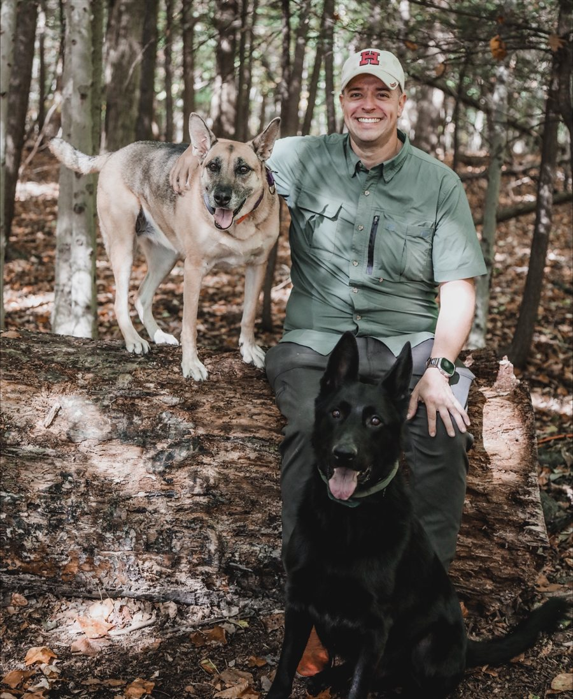

Adam J. Sullivan, PhD
Senior Director, Head of Biostatistics, Capricor Therapeutics
I am a biostatistician working on clinical trials in rare disease. Before Capricor I worked in oncology and real-world evidence at Servier Pharmaceuticals and at Takeda, and before industry I was on the biostatistics faculty of the Brown University School of Public Health, where I directed the master's programs in biostatistics. I trained at Harvard, where my doctoral work was on sensitivity analysis for causal inference.
I write software that makes trial analyses easier to check and to show, and I have spent a good part of my career teaching statistics, R and reproducible research.
Software
ballast
Stress-tests a pre-specified mixed model for repeated measures: refits it under families of data and analytic perturbations and judges every refit against the pre-specified estimate, confidence interval and p-value.
Experience
Education
- PhD, Biostatistics, Harvard University, 2015
- MA, Biostatistics, Harvard University, 2012
- MSc, Mathematics, South Dakota State University, 2010
- BSc, Mathematics and Adolescent Education, Houghton College, 2003
Areas of work
Selected publications
- Kalloo G, Wellenius GA, McCandless L, Calafat AM, Sjodin A, Sullivan AJ, Romano ME, Karagas MR, Chen A, Yolton K, Lanphear BP, Braun JM. Chemical mixture exposures during pregnancy and cognitive abilities in school-aged children. Environmental Research, 2021.
- Ziobrowski HN, Buka SL, Austin SB, Duncan AE, Sullivan AJ, Horton NJ, Simone M, Field AE. Child and adolescent maltreatment patterns and risk of eating disorder behaviors developing in young adulthood. Child Abuse & Neglect, 2021.
- Ziobrowski HN, Buka SL, Austin SB, Sullivan AJ, Horton NJ, Simone M, Field AE. Using latent class analysis to empirically classify maltreatment according to the developmental timing, duration, and co-occurrence of abuse types. Child Abuse & Neglect, 2020.
- Beckman MD, Çetinkaya-Rundel M, Horton NJ, Rundel CW, Sullivan AJ, Tackett M. Implementing version control with Git and GitHub as a learning objective in statistics and data science courses. Journal of Statistics Education, 2020.
- Gjelsvik A, Rogers ML, Garro A, Sullivan A, Koinis-Mitchell D, McQuaid EL, Smego R, Vivier PM. Neighborhood risk and hospital use for pediatric asthma, Rhode Island, 2005–2014. Preventing Chronic Disease, 2019.
- Werner EF, Has P, Kanno L, Sullivan A, Clark MA. Barriers to postpartum glucose testing in women with gestational diabetes mellitus. American Journal of Perinatology, 2018.
- Balboni MJ, Sullivan AJ, Smith PT, Zaidi D, Mitchell C, Tulsky JA, Sulmasy D, VanderWeele TJ, Balboni TA. The views of clergy regarding ethical controversies in care at the end of life. Journal of Pain and Symptom Management, 2017.
- Balboni M, Sullivan AJ, Enzinger A, Smith P, Mitchell C, Peteet J, Tulsky J, VanderWeele TJ, Balboni TA. U.S. clergy religious values and relationships to end-of-life discussions and care. Journal of Pain and Symptom Management, 2017.
- Epstein-Peterson ZD, Sullivan AJ, Krishnan M, Chen J, Ferrone M, Baldini E, Balboni TA. Postoperative radiation therapy for osseous metastasis: outcomes and predictors of local failure. Practical Radiation Oncology, 2015.
- Epstein-Peterson ZD, Sullivan AJ, Enzinger AC, Trevino KM, Zollfrank AA, Balboni MJ, VanderWeele TJ, Balboni TA. Examining forms of spiritual care provided in the advanced cancer setting. American Journal of Hospice and Palliative Medicine, 2014.
- Balboni MJ, Sullivan A, Enzinger AC, Epstein-Peterson Z, Tseng Y, Mitchell C, Niska BA, Zollfrank A, VanderWeele TJ, Balboni TA. Nurse and physician barriers to spiritual care provision at the end of life. Journal of Pain and Symptom Management, 2014.
- Tseng YD, Krishnan MS, Sullivan AJ, Jones JA, Chow E, Balboni TA. How radiation oncologists evaluate and incorporate life expectancy estimates into the treatment of palliative cancer patients: a survey-based study. International Journal of Radiation Oncology, Biology, Physics, 2013.
- Tseng YD, Krishnan MS, Jones JA, Sullivan AJ, Gorman D, Taylor A, Pacold M, Kalinowski B, Mamon HJ, Abrahm J, Balboni TA. Supportive and palliative radiation oncology service: impact of a dedicated service on palliative cancer care. Practical Radiation Oncology, 2013.
- Balboni MJ, Sullivan A, Amobi A, Phelps AC, Gorman D, Zollfrank A, Peteet JR, Prigerson HG, VanderWeele TJ, Balboni TA. Why is spiritual care infrequent at the end of life? Spiritual care perceptions among patients, nurses, and physicians and the role of training. Journal of Clinical Oncology, 2013.
Since 2022 I have also co-authored oncology abstracts presented at ESMO and ESMO Gastrointestinal Oncology and published in Annals of Oncology, among them the real-world PROMETCO cohort in metastatic colorectal cancer and the phase IIIb ProvIDHe study of ivosidenib in IDH1-mutated cholangiocarcinoma.
Books
- Leonard KL, Sullivan AJ. Biostatistics for Oncologists. Springer Publishing Company, 2018.
- Sullivan AJ. R Companion for Statistics for Social Science. Top Hat Monocle, 2018.
- Hayward S, Bailey SL, Hauselt J, Kampen K, Neely ML, Carroll D, Sullivan AJ, Cullum AJ. Statistics for Social Science: A Top Hat Interactive Text. Top Hat Monocle, 2016.
Teaching
- Introduction to R, a free course for people new to R (2016)
- EvSynth Academy, a seven-module online course in evidence synthesis, with Christopher Schmid and colleagues at Brown (2017–2018)
- Short courses: Introduction to R programming for biostatistics, NAMBARI workshop, AMPATH and Moi University School of Medicine, Eldoret, Kenya (2017); Introduction to the tidyverse, South Dakota State University Data Science Symposium (2019)
Awards: Dean’s Award for Excellence in Teaching, Brown University (2018); Sheridan Junior Faculty Teaching Fellow, Brown University (2017–2018); Teaching with Technology Showcase Award, Brown University (2017); Dean’s Award for Excellence in Classroom Instruction, Brown University School of Public Health (2016).
Selected talks
- Helping students develop data workflows and reproducible research. Royal Statistical Society International Conference, Belfast, 2019.
- Implementing reproducible research in statistics courses using Git and GitHub. United States Conference on Teaching Statistics, 2019.
- Translating an area-based socio-economic risk index into clinical practice. CityMatCH Conference, Providence, 2019.
- Modern tools for reproducible research. South Dakota State University Data Science Symposium, 2019.
- Statistics and the emerging discipline of data science. United States Conference on Teaching Statistics, 2017.
- The results of blended instruction in quantitative methods in public health: a pilot study. Joint Statistical Meetings, Chicago, 2016.
- Sensitivity analysis for linear structural equation models. College of William & Mary and Clarkson University, 2015.
Grants
- Co-PI: Translating an area-based socio-economic deprivation index into clinical practice. RI Advance-CTR, 2018–2019.
- Co-Investigator: Innovative training to improve CER/PCOR systematic review production and uptake. AHRQ R25 HS23299, 2014–2019.
- Co-Investigator: Rhode Island Center for Clinical and Translational Science. NIGMS U54 GM115677, 2016–2021.
- Co-Investigator: Training and teaching for transforming big data knowledge. NIMH R25 MH116440, 2016–2021.
Affiliations
- American Statistical Association, member since 2015
- Irish Statistical Association, member since 2017
- Society for Pediatric Research, member since 2018
- External IRB board member, Johnson & Wales University, since 2018